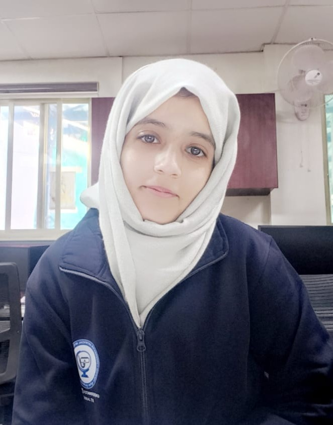

Students & Alumni
Back to HomeMr. Gokul Singh Chauhan
Research/Program: Biomedical Applications
Ms. Alisha Gupta
Research/Program: Biomedical Signal Processing

Ms. Mehvish Nissar
Research/Program: Underwater Surveillance using Neuromorphic Models
Ms. Zareena Amin
Research/Program: On Deepfake Detection
Ms. Mahima Gandotra
Research/Program: AI in Smart-grid
Ms. Sharif Saleem
Research/Program: Document Forgery Detection
Mr. Utkarsh Chandra
Research/Program: CSP
Sqn. Ldr. Gaurav Rai
Research/Program: CSP
Dr. Ambreen Bashir
Research/Program: No-reference Image Quality Assessment: From Domain-Specific Analysis to General Purpose Adaptation
Dr. Himanshu Singh
Research/Program: Leveraging Contextual Temporal Dynamics for Action Recognition and Localization in Complex Videos
Dr. Meghna
Research/Program: Towards Underwater Surveillance by using Graph Refactoring in Convolutional Neural Networks
Dr. Manoj Kumar Panda
Research/Program: Thermal and Visual Data Fusion for Surveillance
Dr. Deepak Kumar Rout
Research/Program: On Design of a Visual Surveillance System for Complex Underwater Scenarios
Ms. Sarayu Miththira V C
Research/Program: Deepfake detection
Mr. Prabhat Kumar
Research/Program: Object detection and surveillance
Ms. Juhi Dubey
Research/Program: Neuromorphic model
Mr. Piyush Yadav
Research/Program: Medical signal processing
Mr. Rahul Baghel
Research/Program: Deep fake detection
Ms. Pallavi Paramita Nayak
Research/Program: Driver Attention System
Mr. Sumit Kumar
Research/Program: Early Detection of Lung Cancer
Mr. Venkata Koushik Rebbapragada
Research/Program: Fake Document Image Analysis
Mr. Sumanth Hegde
Research/Program: Underwater Surveillance
Mr. Sachin Kumar
Research/Program: Real Time Threat Detection
Mr. Puvvada Dinesh Srivasthav
Research/Program: Deepfake detection
Mr. Suresh Dakavarapu
Research/Program: Wearable AI for Students
Mr. Arupam Sengupta
Research/Program: AIML Ex Program
Mr. Anurag Bhat
Research/Program: AIML Ex Program
Ms. Rosemeen Paswan
Research/Program: Searchable Repository for Multidimensional Data
Mr. Amit Kumar Shaw
Research/Program: Medical Imaging
Mr. Rajat Mittal
Research/Program: Action Recognition in Videos
Mr. Prabhat Kumar Sharma
Research/Program: Underwater Surveillance
Mr. Mohit Singh Verma
Research/Program: Action Recognition in Video
Mr. Rohan Baghel
Research/Program: Underwater Image Enhancement
Mr. Raja Babu Meena
Research/Program: Underwater Image Enhancement
Mr. Khanjan Choudhury
Research/Program: Action Recognition in Videos
Mr. Kumar Vishwajeet
Research/Program: Deep Learning based Sustainable and Renewable Energy and Price Forecasting
Ms. Bharati Gourgopal Padhy
Research/Program: Towards the Development of Deep Learning Architecture for Underwater Trashcan Detection
Ms. Fardabi Shaikh
Research/Program: Brain Tumor MRI Segmentation Using Deep Learning
Mr. Kunal Bhangare
Research/Program: Sign Language Recognition
Mr. Tirupati Pallewad
Research/Program: Learning from Trimmed Videos to Localize Actions
Ms. Pious Pradhan
Research/Program: Fusion-based Deep CNN for Underwater Image Enhancement
Mr. Divakar Singh
Research/Program: An Image Forensic Technique Learning-Based on JPEG Ghosts
Mr. Pucha Rohan
Research/Program: PRNU Based Source Camera Identification For Varied Environmental Conditions
Mr. Avijit Dey
Research/Program: Action Recognition
Mr. Deul Saha
Research/Program: Human Action Recognition: A Deep Learning Perspective
Mr. Sagnik Mondal
Research/Program: Deep Learning Based Face Recognition Using Euclidean Distance Measure